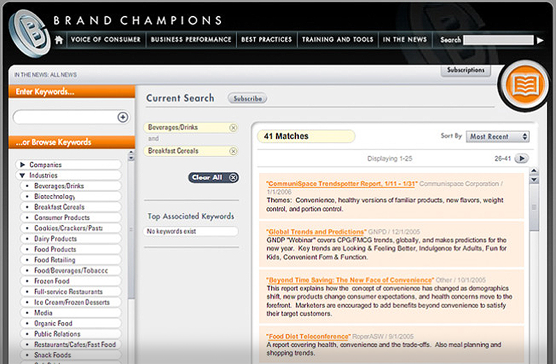
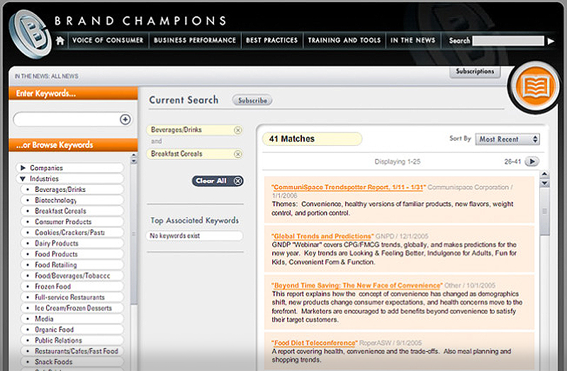

UI/UX Design
C-Map Genesis
C-Map, a division of Navico Marine Electronics, hired me to do a complete audit of their online customer experience. This included UI/UX recommendations and development-ready designs, a comprehensive analysis of thier social media presence, customer journey maps, surveys, user persona developent and analytics insights. Through partnership with their leaders, I was able to complete a holistic appraoch to a roadmap of UI and UX improvements that immediately drove measureable results.
Role: UI/UX Design Consultant
Best Buy
I lead a team of UI Designers and UX Architects working in the product model to continuously optimize the shopping path experience within Best Buy.com. Partnered closely with development leads and product managers to ensure that the customer experience was a top priority in any business decision. As a people manager, I was in charge of mentoring and developing my direct reports as well as managing their day-to-day work. I was a working manager who was consistently producing directional design work to help define solutions quickly.
Key contributions:
Assisted in the staffing and growth of the UX team at BestBuy.com
Lead the UI design portion of the transformation of BestBuy.com to a responsive site; defining UI design standards and implementing a shared pattern library to be used across all product teams.
Planned and executed A/B tests and in-person user testing
Defined and executed on a strategy for improving the customer shopping / browse experience within BestBuy.com
Partnered with systems architects, analysts and content managers to build a CMS, reusable modules/components and a new content repository to support a responsive site
Significantly impacting revenue and engagement metrics through tested UI/UX improvements
Role: UX Manager, UI & UX Design


Hasbro
While working at Popular Front, I lead the design of a large children's online game portal. I illustrated, designed and animated interactive online games and brand websites for a variety of Hasbro's brands. I got to utilize my illustration and animation skills while producing intuitive interfaces for pre-literate children.
Role: Associate Creative Director, Designer, Animator, Illustrator


Starkey
As a part of a re-desgin of all of Starkey's brand sites I led a team of desginers to create concepts for their new consumer-facing site.
Role: Lead Designer

Target
While at Popular Front, I led the content desgin for the movie and video game sites: CinemaRed and Get Into The Game. This included animation, promotions design, banner ads, and microsites for large title releases.
Role: Lead Designer


Def Jam Records
As an RFP response, I designed a concept for a 'magazine-like' brand site that was visually interesting and utilized movement and on-traditional interactivity to create an immersive and unique online experience for Def Jam.
Role: Associate Creative Director, Designer


Scholastic
Along with my tean at Popular Front, I created custom-illustrated interface designs and lead a team of designers to create a custom online play site for children focuse around building stories and creativity.
Role: Associate Creative Director, Illustrator & Designer

General Mills
While at Popular Front, I desgined and led a variety of projects for General Mills including Wheaties.com, Eat Better Early (WIC Program) and their internal brand portal, Brand Champions.
Role: Associate Creative Director, UI Designer
 

Towers Watson
In response to an RFP, my team at Popular Front produced protoypes for a new interface for their customer portal. The goal was to create something that reflected the company's committment to providing industry-leading services.
Role: Associate Creative Director, UI Designer